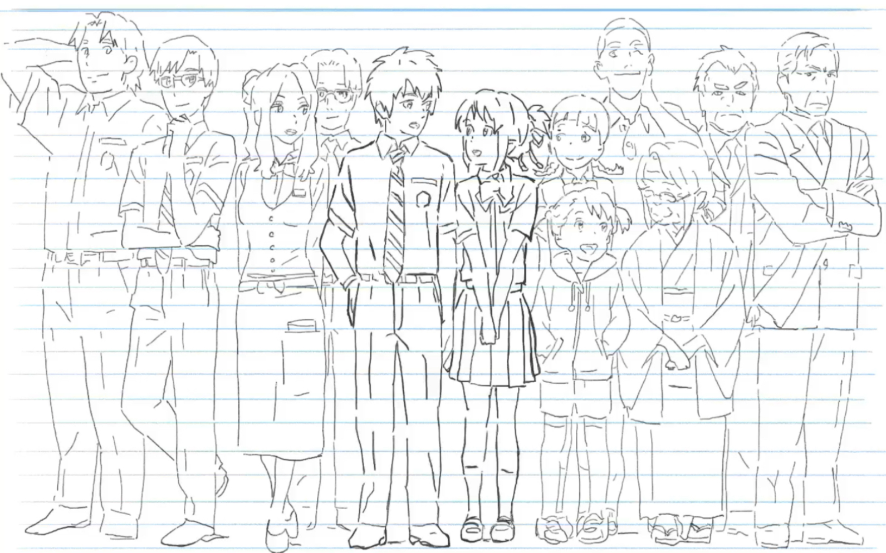
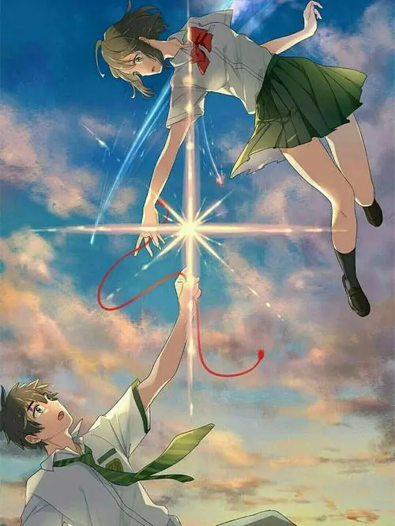
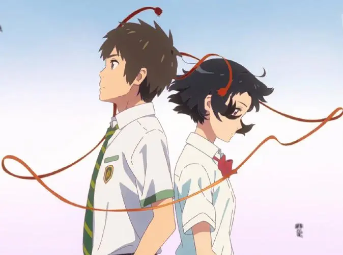

《你的名字》是由日本导演新海诚执导的一部动画电影，于2016年8月26日在日本上映。
该电影的故事讲述了两个身处不同地方的高中生，在奇妙的事件中开始了身体交换，并逐渐了解了对方的生活和家庭，也产生了情感上的联系。但当他们试图见面时，却发现彼此所处的时间和空间并不一致，于是展开了寻找对方的旅程。整个电影充满了神秘和浪漫色彩，画面和音乐也非常精美动人。
该电影在上映后获得了广泛的好评和高票房，成为日本动画电影的代表作之一。它也在全球范围内引起了轰动，成为日本文化输出的重要作品之一。
创作背景
《你的名字》的创作背景是日本2011年的311大地震。导演新海诚在看到灾难后的日本社会的变化和人们对于生命和亲情的关注后，萌发了创作这部电影的想法。他希望通过这部电影表达对于生命和家庭的珍视，以及对于人类之间联系和情感的探索。同时，他也想呈现出日本传统文化和现代文明的融合，以及东京和乡村之间的差异和联系。这些元素都在电影中得到了很好的体现，成为了该电影受欢迎的重要原因之一。
剧情简介
电影讲述了两个身处不同地方的高中生宫水三叶和立花瀧，在奇妙的事件中开始了身体交换。他们每天都会在对方的身体中度过一段时间，经历了许多有趣和感人的事情。在这个过程中，他们逐渐了解了对方的生活和家庭，也产生了情感上的联系。但当他们试图见面时，却发现彼此所处的时间和空间并不一致，于是展开了寻找对方的旅程。
在寻找过程中，三叶和瀧经历了许多意想不到的事情，包括被暴风雪困住、被火车追逐、被神秘力量干扰等等。他们也逐渐发现了彼此身世的秘密，以及身体交换事件背后的真相。最终，在一次神秘的仪式中，他们终于相遇并确认了对方的身份。但这个过程中，他们也付出了一些代价，包括失去了一些记忆和经历了一些痛苦。
整个电影充满了神秘和浪漫色彩，画面和音乐也非常精美动人。它呈现出了日本传统文化和现代文明的融合，以及东京和乡村之间的差异和联系。同时，它也表达了对于生命和家庭的珍视，以及对于人类之间联系和情感的探索。
